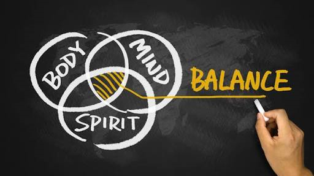

What is Ayurveda?
Ayurveda, a holistic system of health and healing, is the wisdom of ancient India on health. It is a time tested medical system that served humanity and survived in Indian subcontinent for more than last 5000 years. Ayurveda is developed on strong principles which are applicable even today. As these theories are developed from Indian philosophies (darsanas) on life which are based on inductive reasoning, you may find it sometimes hard to understand these theories as we are developed on the deductive reasoning of today’s science. Continue reading even if you can’t digest, by the end you will get some idea. An important hurdle in understanding these theories will be comparing them with modern science; it is a vast and deep process. So try to understand body in Ayurvedic way, than trying to understand Ayurveda in a modern way. An understanding of Ayurvedic principles will help you to take care of your body in a better way.
According to Ayurveda all materials in this world are made up of five basic elements. They are
- Space: Provides space for the material.
- Air: Provides shape and movement.
- Fire: Provides energy.
- Water: Provides cohesion, keeps different particles of matter together.
- Earth: Gives mass to the material.
This is applicable to any matter on this universe from an atom or even its constituents. If the matter has its own qualities and actions, then they are made up of five elements. The difference in relative concentration of these elements results into the formation of different materials. Ayurveda understands all the materials that can be used for treatments based on this theory.
In a living body the five basic elements form different complex body constituents to maintain the complex functions. According to Ayurveda, the constituents particularly important are the three doshas. They are vata, pitta and kapha. Vata is formed mainly from space and air. It is the force responsible for movement and control. It is mainly involved in nerve impulses, circulation and movement of muscles and joints. Pitta is derived from fire and water. It is the force that brings transformations in our body. Enzymes and hormones are abundant in pitta. Digestion of food, vision, cognitive processing, etc are functions of pitta. Kapha is derived from water and earth; it provides lubrication and maintains the body.
In short, vata provides kinetic energy, kapha potential energy and pitta transforms one to other. Vata is depleting, kapha is nourishing, pitta balances. So it is clear that they are performing complex functions and a balance between them is necessary to maintain health. Dosha is a Sanskrit word meaning ‘err’. Doshas can be imbalanced easily, that is why they have got that name. In order to maintain health doshas should be of optimum quantity and quality. Clinically, Ayurveda mainly concentrates on the level of doshas and to correct the imbalances. There are other constituents of body like digestive fire (agni), tissues, waste materials, channels, ojas (essence of body) which are also needed to be in balance to maintain health. But doshas superimpose others and have an important role in maintaining the health of other body constituents as well.

As per the state of doshas in various factors of fertilization, the resulting progeny has a basic dosha pattern, which remains unchanged to death. This basic dosha pattern is responsible for individual physical and mental characteristics. Ayurveda calls this dosha pattern as prakruti (Ayurvedic body constitution). Understanding of Ayurvedic body constitution helps to understand diet, life style and medicines that are most suitable for a person. In Ayurveda, among all lifestyle recommendations prakruti is the most important one.
While dealing with an individual, Ayurveda always considers spiritual, mental and physical aspects. So Ayurveda advises diet, lifestyle and treatments accordingly.
Doshas, other body constituents, medicines, seasons, places, everything are interpreted according to their attributes in Ayurveda. Ayurveda works based on the principle that ‘things of same attributes can increase each other and things of different attribute can decrease each other’. For example, a food that has qualities similar to vata increases vata and an activity which has opposite qualities of kapha can decrease kapha. So when your body is too cool, have something hot. However, if you are not sure about what to eat, better seek help.
Ayurveda defines health as a ‘balance of doshas and other body constituents, proper waste elimination, and wellness of sensory perception, mind and spirit.’ Nature is changing from seasons to seasons. So is our body, it is different in different times of day, seasons, phases of life and according to the food, activities and emotions we consume. So it is important to balance the change in your body and external world through proper food and lifestyle.
One of the important things we do wrongly is to wait for diseases having names to start treatment, while we are having so many things wrong years before. So whenever you feel something wrong adjust your lifestyle accordingly. Health issues are usually Nature’s pat on your shoulder to remind you to take care of your body.
Doshas need to be in optimum quantity and quality to bring about the balance and maintain health. So doshas are constantly generated in body, circulated through the whole body and eliminated properly. So when this system is disturbed, doshas are increased or decreased. Then they disturb body and leads to disease. When doshas are decreased they need to be increased and when they are increased they need to be decreased. But when the doshas are increased than a level,Ayurveda recommends eliminating from the body through a number of processes called panchakarmas. Instead of clearing the toxins that imbalances doshas, if we simply try to pacify/ suppress them the disease can return easily sometimes even forcefully.